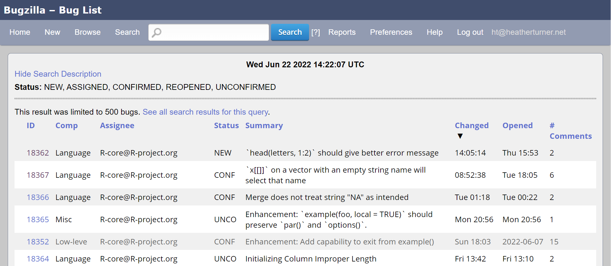

Welcome to the Bug BBQ
Overview
Aim: 24 hours for the community to help with R bugs
- Learn more about R’s development process
- Chat with experienced contributors including R Core members
- Take a look at some bugs
- See if you can contribute!
???
The Bug BBQ is an opportunity for the community to get together and help out with bugs in R.
For new contributors, it will be a chance to learn more about R’s development process.
For all participants, it will be a chance to chat with experienced contributors, including R Core developers, and to take a look at some R bugs and see if you can contribute
bugs.r-project.org

???
Bugs in R are tracked in R’s Bugzilla, which can be found at bugs.r-project.org. This screen shot shows the results of a search for open bugs, in order of the most recent change, with the newest at the top.
Bug report
???
Here is an example bug report on Bugzilla. We just see the start of the report here, with the metadata. In this case the bug was reported by Martin Maechler.
Bug report comments
???
If we scroll down, we can see the comments. The first comment is the bug report itself. There maybe be further comments in reply, discussing the bug and potentially how to fix it.
Proposed patch
???
Sometimes there will be a proposed patch attached to the bug report. This can be found in the attachments section under the metadata.
The patch is a diff between the proposed changes and the current source code. Click on the Diff link next to the attached patch to view the diff in the browser.
Patch contents
???
In this Diff viewer, the original source code is on the left and the proposed update is on the right. The lines of code that have been modified are highlighted.
github.com/r-devel/bug-bbq
???
For the Bug BBQ, we will be treating R’s Bugzilla as read only. We have set up a GitHub repo for this event, to allow informal discussion of bugs and to track any contributions. This screenshot shows the homepage for that repo, which you can find at github.com/r-devel/bug-bbq. Scroll down to see the README which contains instructions on how to participate. The rest of this presentation will give an overview of these instructions.
Work on issues
???
On the issues page of the bug-bbq repo, issues have been created that correspond to one or more bugs on Bugzilla. The issues have been labelled to help you find bugs to work on. The labels that start with capital letters, e.g. Models or Documentation, describe the general topic of the bug. The labels in lower case describe required actions. We’ll go through these action labels in more detail.
needs reprex
These bug reports require a minimal reproducible example that demonstrates the bug, using only core R packages.
- You may need a specific version of R to reproduce the bug
- Post your reprex on the GitHub issue, adding
@r-devel/triagers
???
Bugs labelled “needs reprex” require a minimal reproducible example to reproduce the bug, using only core R packages.
You may need a specific version of R to reproduce the bug. We’ll come back to accessing different versions of R later.
If you create a reprex, post it as a comment on the GitHub issue corresponding to the bug and add @r-devel/triagers to notify the Triage team of the update.
check in r-devel
For these bugs, we need to check if they are still an issue in the current R development version.
- Run the reproducible example in R-devel
- On the corresponding GitHub issue:
- Report if the bug is still an issue in R-devel
- Note the exact version of R-devel that you checked
- Tag
@r-devel/triagers
???
Bugs labelled “check in r-devel”, need checking if the bug is still an issue in R-devel, the development version of R.
Using R-Devel, run the reproducible example that you can find in the original bug report, or on the GitHub issue.
Report back on the GitHub issue, stating if the bug is still present or not. Add the exact version of R-devel that you used and tag @r-devel/triagers.
needs diagnosis
Once the bug is reproducible in the development version of R, the cause of the bug should be diagnosed.
- Explore the reprex interactively
- Categorise as
not a bug,wishlist, orconfirmed bug - Report back on the GitHub issue:
- Where and why the bug happens
- The bug category (
not a bug,wishlist, orconfirmed) - Tag
@r-devel/triagers
???
For bugs labelled “needs diagnosis” we need to diagnose where and why the buggy behaviour occurs.
Explore the reprex interactively in a version of R where the bug can be reproduced.
You may discover the reported bug reflects a misunderstanding or a wish about how R should work and is not a real bug.
Report back your findings on the GitHub issue tagging @r-devel/triagers.
discuss fix
Once the cause of the bug is known, there should be a discussion about how to fix it.
- Add a comment to the GitHub issue corresponding to the bug.
- Follow the repo to be notified of any responses and respond if you have further comment, or react with emoji.
???
For bugs labelled “discuss fix”, we need help deciding how to fix the bug.
You can share your opinions about any proposed approach or propose your own approach in a comment on the GitHub issue.
Follow the repo to be notified of any responses and respond if you have further comment, or react with emoji.
needs patch
Once there is agreement from a member of R Core on how to fix a bug, you can implement the fix.
- Check out the latest version of the source code for R
- Make changes to the code to implement your fix
- Prepare a patch
- Test your patch
- Add a comment to the GitHub issue with your patch
- Tag @r-devel/triagers
???
For bugs labelled “needs patch” an R Core member has agreed how the bug should be fixed and you can implement the fix.
There are some tips on the bug-bbq repo README of how to go about the process of making changes to a copy of the source code and preparing a patch.
Once you have a patch you may add it as a comment on the GitHub issue, tagging @r-devel/triagers.
needs review
Once a patch is proposed, it can be helpful for others to review the patch.
- Review the bug report and any comments
- Review the proposed patch
- Report back on the GitHub issue:
- Does the patch resolve the bug?
- Do you have any feedback that could improve the patch?
???
Bugs labelled “needs review” have a code or documentation patch that is ready for review.
Start by reviewing the bug report and any comments, before looking at the proposed patch.
Report back on the GitHub issue, stating if the patch resolves the bug, and adding any feedback you have from your review.
Add new issues
You are welcome to review the open bugs on Bugzilla and add corresponding issues on the bug-bbq GitHub repo.
- Follow the standard format for the title
- Ask a member of the Triage team to add labels
???
You are welcome to review the open bugs on Bugzilla and add corresponding issues on the bug-bbq GitHub repo for bugs that you would like to work on.
Follow the standard format for the title.
Only members of the triage team can add labels. If you want to help out by labelling bugs ask to be added to the team!
Choose how to work
You can work on bugs anytime during the 24 hour event
The #bug-bbq channel on the R-Devel Slack is available to - Discuss bugs in threads - Get help in main channel
There are 3 Zoom sessions of 4 hours - Join a breakout room & work together - Get help in the main room
???
You can work on bugs anytime during the 24 hour event
The #bug-bbq channel on the R-Devel Slack is available all the time for you to discuss bugs in threads, or get help in main channel.
In the scheduled Zoom sessions you can join a breakout room to work with others, or you can join the main room to get help from facilitators or chat with experienced contributors.
Further help
The bug-bbq README contains help on: - Accessing different versions of R, including R-devel - Getting a copy of the R sources - Modifying an R function - Making and testing a patch - Applying a patch to your copy of the R sources
For further help, please ask on Zoom or in the Slack!
???
The bug-bbq README contains help on: - Accessing different versions of R, including R-devel - Getting a copy of the R sources - Modifying an R function - Making and testing a patch - Applying a patch to your copy of the R sources
For further help, please ask on Zoom or in the Slack!
.center[# Let’s go!
]
???
So, let’s go! We look forward to meeting you during the organized sessions and hope that together we are able to make progress on open bugs in R.